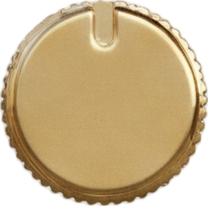
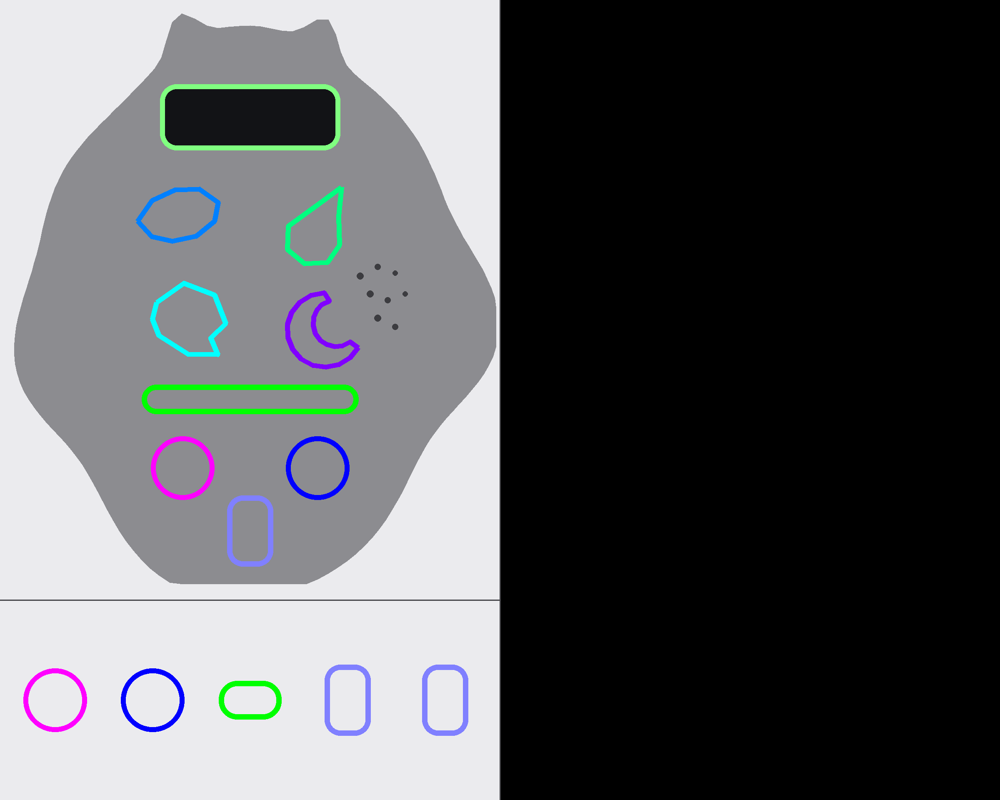
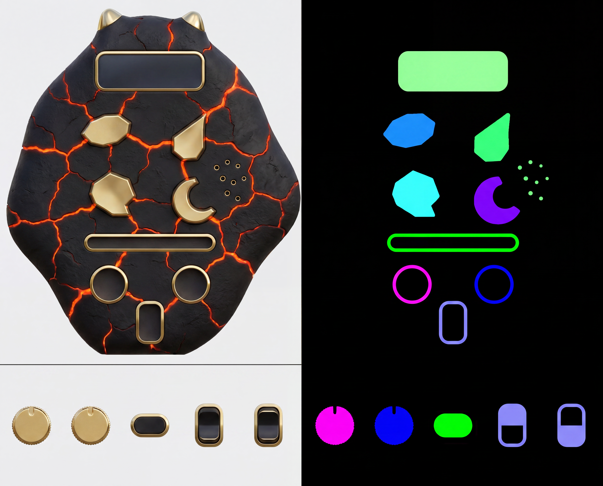
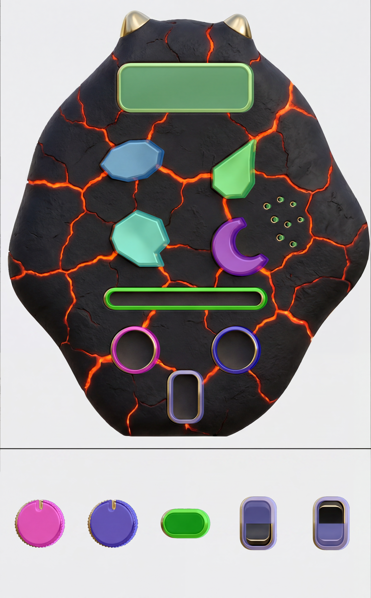
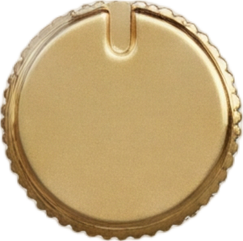
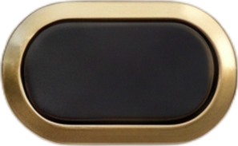
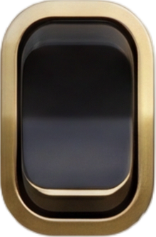
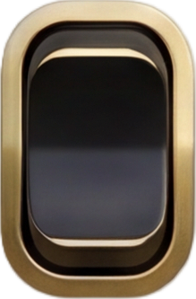
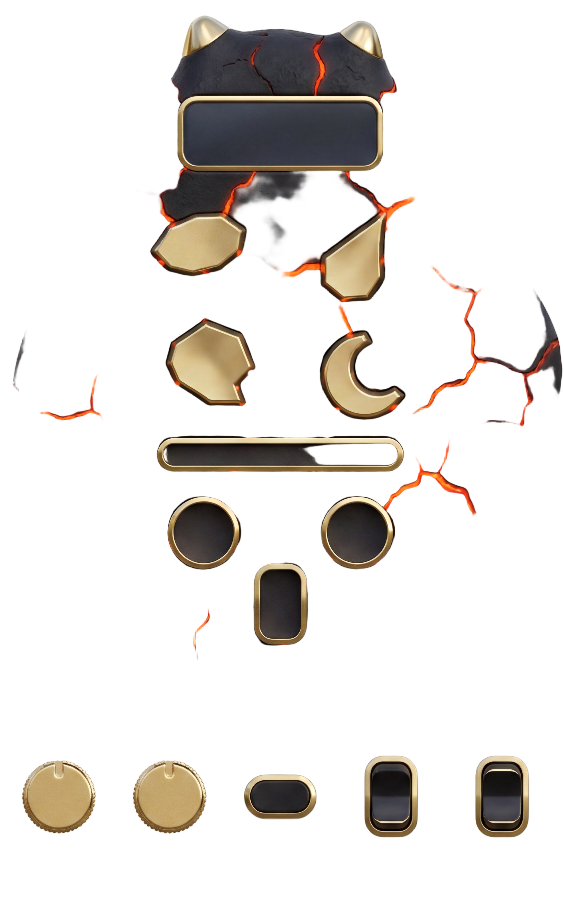
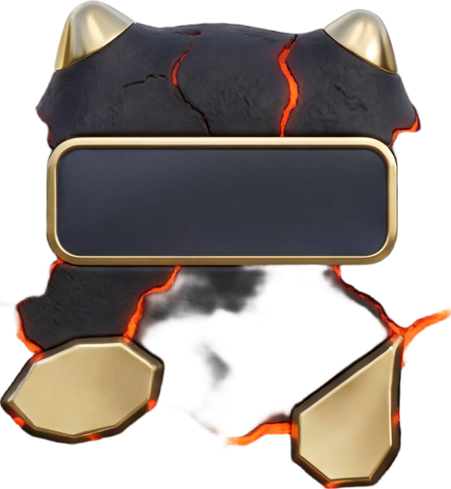

vol cap · global-CC island
Stress test of the run9 pipeline on a deliberately hostile design: an early-2000s alien game
handheld whose housing is an organic asymmetric magma blob (horn nubs, side pod — the blueprint body is a
PIL polygon, not a rounded rect) in cooling black volcanic rubber with glowing lava-orange veins and gold-chrome
piercings. The design palette is vivid and warm — it would collide with run9's fixed red/amber/orange/pink guide
keys — so the guide-colour contract became data: 9 keys picked ≥120 RGB from each other AND from every
palette major, written to results.json, and read from there by the extractor and the BiRefNet splitter.
Zero hardcoded colours downstream. One generation was needed.
| design palette major | rgb |
|---|
| control | guide key | rgb |
|---|
AZURE SPRING CYAN VIOLET MAGENT PURE B PURE G LAVEND PALE M magma_ lava_r ember_ gold_c crust_ rubber backdr
AZURE SKY-BLUE 0 180 127 181 285 128 285 128 221 347 337 331 305 259 238 259
SPRING GREEN 180 0 127 312 382 285 128 221 128 313 331 268 245 258 237 260
CYAN 127 127 0 285 361 255 255 180 180 376 390 324 314 332 309 236
VIOLET-PURPLE 181 312 285 0 127 128 383 128 285 289 255 313 287 258 236 259
MAGENTA 285 382 361 127 0 255 442 180 312 259 235 287 277 330 305 236
PURE BLUE 128 285 255 128 255 0 361 181 312 364 328 384 347 237 225 333
PURE GREEN 285 128 255 383 442 361 0 312 181 294 316 266 232 235 223 335
LAVENDER-PERIWINKLE 128 221 180 128 180 181 312 0 180 268 267 247 235 278 248 152
PALE MINT-GREEN 221 128 180 285 312 312 181 180 0 221 259 151 148 277 247 155



ONE BiRefNet call (fal-ai/birefnet/v2 Heavy 2048)
over the whole paint → the matte's connected-component islands, correlated to identity via the mask strip cells
(centroid match, never left-to-right order). All five parts matched at ≤0.6% centroid error.





On run9's graphite phone the single global matte kept the whole body opaque and every open socket became an enclosed alpha-hole (= a measured seat). On the magma design BiRefNet refused the matte-black crust — it kept the gold controls, screen, horns and lava veins and dropped most of the black body as background, shattering the matte into 10+ “extra” islands. Consequences: no device island worth cutting, and zero measurable socket seats (black wells in a black body have no alpha-hole to find). Sprite-part islands were unaffected. Shown raw, unretouched:


| control | template→mask drift % | mask→skin residual % (x) | snap |
|---|
The two-panel contract + adaptive keys held on a wild design — 1 generation, all gates green. The organic blob silhouette (horns, pods) survived into both panels; the four irregular button outlines were preserved well enough for tight mask↔paint registration (avg template→mask drift 0.8%, max 2.1% on the crescent); every cavity came back as an empty dark well (emptiness gate 0.0–4.5%, all ok); the strip is exactly five top-down parts with distinct toggle states; leak gate 0.0000% — the data-driven key pick (no warm keys against a warm palette) worked exactly as designed, and the extractor ran with zero hardcoded colours.
What bent: (1) the model echoed the blueprint's outline style in the mask — on-device socket regions came back as RINGS rather than solid fills (bbox extraction is outline-tolerant, so no harm, but a solid-fill mask would be more robust); (2) button shapes were simplified (the pebble tended toward an octagon, the kidney lost its bite) — mask matched paint so alignment held, but shape fidelity is a real casualty of the busy material; (3) stray mask blobs: the vent pores were dotted into the mask in spring green — filtered by the largest-CC + size gates.
What broke outright: the single-pass BiRefNet device cut + matte-hole seat
measurement. The segmenter dropped the matte-black crust as background (10+ fragment islands, no enclosed
socket holes), so run9's “measured painted well” seating degrades to the snapped-bbox fallback — by design,
regions.json simply carries no seat entries and the interactive below uses the
fallback path. Lesson: matte-hole seats require a body a salient-object segmenter will keep, and black wells
in a black body are invisible to alpha-hole detection; a known-backdrop chroma key would recover the body
silhouette here, but not the seats.
The end of the chain: device background from the paint, sprites = the global-BiRefNet islands. No measured seats on this design (see d²), so knobs seat via the snapped mask bbox ×1.10 fallback. Drag the knobs (pinned specular), drag the seek thumb along the groove, click the toggle (its two painted states), press the organic buttons (mask-silhouette darkening).